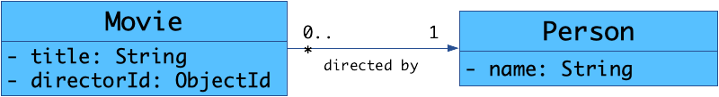
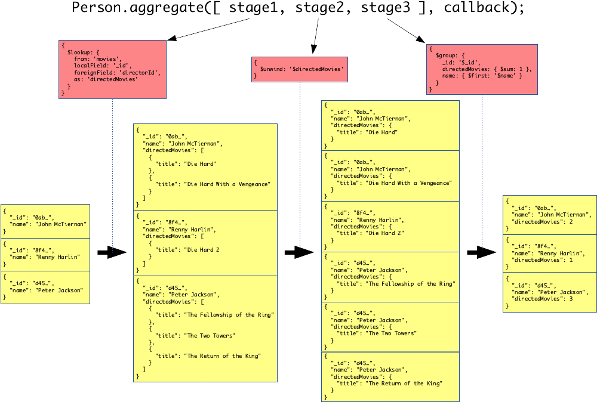

# Using Mongoose with Express Learn how to implement advanced RESTful API operations in [Express][express] with [Mongoose][mongoose] (a [MongoDB][mongodb] Object-Document Mapper). **You will need** - A running [MongoDB][mongodb] database - A running [Express][express] application with [Mongoose][mongoose] plugged in **Recommended reading** - [REST introduction & HTTP](../rest/) - [REST in depth](../rest-advanced/) - [Express](../express/) - [Mongoose](../mongoose/) --- ## Demonstration RESTful API .breadcrumbs[<a href="#1">Using Mongoose with Express</a>] The examples in this tutorial are taken from a RESTful API developed to demonstrate how to implement REST concepts. You will find the [source code][demo] of this API and its [documentation][demo-doc] on GitHub. The API is also deployed on [Heroku][heroku] (follow the instructions in the documentation to try it). You should read about the [resources][demo-res] that you can manipulate with this API before moving on. --- class: center, middle ## Relationships .breadcrumbs[<a href="#1">Using Mongoose with Express</a>] <p class='center'><img class='w60' src='images/relationships.jpg' /></p> How do I link stuff together? --- ### Mongoose references .breadcrumbs[<a href="#1">Using Mongoose with Express</a> > <a href="#3">Relationships</a>] MongoDB has no foreign keys, but you can still link documents together by storing references to other documents. These references could be of any type and to any field, but they are often a reference to the MongoDB ID of the target document. You can tell Mongoose that a property is a [**reference**][mongoose-reference] to another model by setting its `type` to `Schema.Types.ObjectId` (indicating that it is a MongoDB document ID), and setting its **`ref`** to the name of the target model: ```js /** * A movie directed by a person. */ const movieSchema = new Schema({ // ... director: { * type: Schema.Types.ObjectId, * ref: 'Person' } }); ``` --- ### Mongoose population .breadcrumbs[<a href="#1">Using Mongoose with Express</a> > <a href="#3">Relationships</a>] Let's assume you have a movie document. Its `director` property is a MongoDB ID which references another document: ```js const movie = await Movie.findOne({ title: 'Casino Royale' }).exec(); console.log(movie.director); // ObjectId("5f7a3e74576b3d75acea6c7d") ``` When calling [`populate`][mongoose-population], the reference is replaced by the target document itself, loaded using the model defined with the `ref` property in the schema: ```js const movie = await Movie .findOne({ title: 'Casino Royale' }) * .populate('director') .exec() console.log(movie.director.name); // "Martin Campbell" ``` --- class: center, middle ## Filtering .breadcrumbs[<a href="#1">Using Mongoose with Express</a>] <p class='center'></p> How do I get only the right stuff? --- ### Limiting collections .breadcrumbs[<a href="#1">Using Mongoose with Express</a> > <a href="#6">Filtering</a>] Often when clients make requests on a RESTful API's **collection** resource, they don't need the whole thing; they need **only the items they are interested in** for the current view. For example, you might want to display: - The list of movies directed by someone - The list of movies with a rating greater than or equal to 8 - The list of movies directed by either of your two favorite directors --- ### Simple filters .breadcrumbs[<a href="#1">Using Mongoose with Express</a> > <a href="#6">Filtering</a>] Express gives you access to **URL query parameters** in `req.query`, and Mongoose offers a chainable **query builder**; they're very easy to plug together: ```js // GET /api/movies router.get('/', async function(req, res, next) { // Create a query, do not execute it yet let `query` = Movie.find(); // Filter movies by director if (ObjectId.isValid(req.query.director)) { `query = query.where('director').equals(req.query.director)`; } // Limit movies to only those with a good enough rating if (!isNaN(req.query.ratedAtLeast)) { `query = query.where('rating').gte(req.query.ratedAtLeast)`; } // Execute the query const movies = await `query.exec()`; res.send(movies); }); ``` --- ### Dynamic filters .breadcrumbs[<a href="#1">Using Mongoose with Express</a> > <a href="#6">Filtering</a>] What about our director filter? Can we make it work for **multiple directors** as well? Yes we can: ```js // GET /api/movies router.get('/', async function(req, res, next) { let `query` = Movie.find(); // Filter movies by director if (`Array.isArray(req.query.director)`) { // Find all movies directed by any of the specified directors const directors = req.query.director.filter(ObjectId.isValid); `query = query.where('director').in(directors)`; } else if (ObjectId.isValid(req.query.director)) { // Find all movies directed by a specific person `query = query.where('director').equals(req.query.director)`; } // ... }); ``` --- class: center, middle ## Pagination .breadcrumbs[<a href="#1">Using Mongoose with Express</a>] <p class='center'></p> How do I get a reasonable amount of stuff? --- ### Paginating collections .breadcrumbs[<a href="#1">Using Mongoose with Express</a> > <a href="#10">Pagination</a>] Some collections are just **too large to send** to the client in their entirety. The following examples will demonstrate two ways implement **pagination** to retrieve only one "page" of a collection at a time. The following examples assume that you have read [REST in Depth](../rest-advanced/) which explains different ways to expose pagination in a RESTful API. --- ### Using query parameters to select a page .breadcrumbs[<a href="#1">Using Mongoose with Express</a> > <a href="#10">Pagination</a>] In principle, pagination is a **specialized filter**. The client uses **URL query parameters** to tell the server which chunk of the collection it wants. Implementing a `page` and `pageSize` parameters with Express and Mongoose is quite straightforward: ```js router.get('/', async function (req, res, next) { let query = Movie.find(); // Parse the "page" param (default to 1 if invalid) let page = parseInt(`req.query.page`, 10); if (isNaN(page) || page < 1) { page = 1; } // Parse the "pageSize" param (default to 100 if invalid) let pageSize = parseInt(`req.query.pageSize`, 10); if (isNaN(pageSize) || pageSize < 0 || pageSize > 100) { pageSize = 100; } // Apply skip and limit to select the correct page of elements query = query`.skip((page - 1) * pageSize).limit(pageSize)`; // ... }); ``` --- ### Telling the client how to get more elements .breadcrumbs[<a href="#1">Using Mongoose with Express</a> > <a href="#10">Pagination</a>] To include information about getting more elements in the response, you will need to know **how many elements there are in total**, either to give that information directly to the client or to build hyperlinks. You can do that easily using a Mongoose model's `countDocuments()` function: ```js router.get('/', async function (req, res, next) { const total = await `Movie.find().countDocuments()`; let query = Movie.find(); // Apply pagination here (code from previous example)... // Send response (including total/links) here... }); ``` --- ### Using the `Link` header (solution 1) .breadcrumbs[<a href="#1">Using Mongoose with Express</a> > <a href="#10">Pagination</a>] The format is a bit convoluted, but other developers have already gone through the trouble for you. Use the [format-link-header][format-link-header] npm package: ```js import formatLinkHeader from 'format-link-headers'; `const links = {};` function buildLinkUrl(url, page, pageSize) { return url + '?page=' + page + '&pageSize=' + pageSize; } // Add "first" and "prev" links unless it's the first page if (page > 1) { `links.first` = { rel: 'first', url: buildLinkUrl(url, 1, pageSize) }; `links.prev` = { rel: 'prev', url: buildLinkUrl(url, page - 1, pageSize) }; } // Add "next" and "last" links unless it's the last page if (page < maxPage) { `links.next` = { rel: 'next', url: buildLinkUrl(url, page + 1, pageSize) }; `links.last` = { rel: 'last', url: buildLinkUrl(url, maxPage, pageSize) }; } if (Object.keys(links).length >= 1) { `res.set('Link', formatLinkHeader(links));` } ``` --- ### Using custom pagination headers (solution 2) .breadcrumbs[<a href="#1">Using Mongoose with Express</a> > <a href="#10">Pagination</a>] To implement this solution, you simply have to set the headers before sending the response: ```js router.get('/', async function (req, res, next) { const total = await Movie.find().countDocuments(); let query = Movie.find(); // Parse the "page" param (default to 1 if invalid) let page = parseInt(req.query.page, 10); if (isNaN(page) || page < 1) { /* ... */ } // Parse the "pageSize" param (default to 100 if invalid) let pageSize = parseInt(req.query.pageSize, 10); if (isNaN(pageSize) || pageSize < 0 || pageSize > 100) { /* ... */ } // Apply skip and limit to select the correct page of elements query = query.skip((page - 1) * pageSize).limit(pageSize); * res.set('Pagination-Page', page); * res.set('Pagination-PageSize', pageSize); * res.set('Pagination-Total', total); // ... }); ``` --- ### Using a JSON envelope (solution 3) .breadcrumbs[<a href="#1">Using Mongoose with Express</a> > <a href="#10">Pagination</a>] Instead of setting headers, you simply have to build and pass your envelope to `res.send()`: ```js router.get('/', async function (req, res, next) { const total = await Movie.find().countDocuments(); let query = Movie.find(); // Parse query parameters and apply pagination here... const movies = await query.exec(); // Assuming page and pageSize are defined somewhere // in your function or middleware res.send({ page: page, pageSize: pageSize, total: total, data: movies }); }); ``` --- ### Hypermedia pagination (solution 4) .breadcrumbs[<a href="#1">Using Mongoose with Express</a> > <a href="#10">Pagination</a>] Using hypermedia pagination is fundamentally the same as solution 3 (using a JSON envelope), since the pagination information is also included in JSON in the response body. You just have to pass an object of the appropriate shape to Express's `res.send` function. --- class: center, middle ## Aggregation .breadcrumbs[<a href="#1">Using Mongoose with Express</a>] <p class='center'><img src='images/aggregation.png' class='w60' /></p> --- ### Aggregation example .breadcrumbs[<a href="#1">Using Mongoose with Express</a> > <a href="#18">Aggregation</a>] Let's say that when we retrieve **People** from the API, we also want to know **how many movies they have directed**. In SQL, assuming People and Movies are in **different tables**, you would use a **JOIN** and a **GROUP BY** to get that information: ```sql SELECT people.*, SUM(movies.id) AS directed_movies_count FROM `people INNER JOIN movies` ON (people.id = movies.director_id) `GROUP BY people.id`; ``` --- #### MongoDB aggregations .breadcrumbs[<a href="#1">Using Mongoose with Express</a> > <a href="#18">Aggregation</a> > <a href="#19">Aggregation example</a>] If your related documents are stored in two **separate collections** (as is the case for People and Movies in the demonstration RESTful API), you have to **aggregate** information from both collections. <p class='center'></p> Originally, there was no equivalent to the `JOIN` operator in MongoDB. However, the [`$lookup` aggregation operator][mongodb-lookup] was added in version 3.2. To use it, you have to use [MongoDB aggregations][mongodb-aggregation]. --- ### Aggregation pipeline .breadcrumbs[<a href="#1">Using Mongoose with Express</a> > <a href="#18">Aggregation</a>] The preferred MongoDB aggregation method is the [aggregation pipeline][mongodb-aggregation-pipeline]: documents go through a multi-stage pipeline where **each stage transforms the collection of documents** into **aggregated results**. Mongoose models have an `aggregate()` function you can call with an **array of stages** to apply: ```js Movie.`aggregate`([ stage1, stage2, stage3 ]); ``` Each **stage** is an object with an [aggregation pipeline operator][mongodb-aggregation-pipeline-operators]: ```json { `$match`: { director: { $in: [ 'abc', 'def', 'ghi' ] } } } ``` --- #### Aggregation pipeline example (part 1/3) .breadcrumbs[<a href="#1">Using Mongoose with Express</a> > <a href="#18">Aggregation</a> > <a href="#21">Aggregation pipeline</a>] Let's say you have retrieved a list of Person documents from the database, and you want to know how many Movies they have directed. The [`$lookup` operator][mongodb-lookup] retrieves each Person's directed Movies through the `directorId` property: ```js { $lookup: { from: 'movies', localField: '_id', foreignField: 'directorId', as: 'directedMovies' } } ``` Applying this operator adds the new `directedMovies` property to each Person: .grid-50[ ```json { "name": "Peter Jackson" } ``` ] .grid-50[ ```json { name: 'Peter Jackson', `directedMovies`: [ { title: 'a' }, { title: 'b' } ] } ``` ] --- #### Aggregation pipeline example (part 2/3) .breadcrumbs[<a href="#1">Using Mongoose with Express</a> > <a href="#18">Aggregation</a> > <a href="#21">Aggregation pipeline</a>] This would be sufficient to count the number of directed movies, but it also means you would fetch all the Movies' information from the database when you don't really need it. You can avoid this by adding 2 more steps to the pipeline. The [`$unwind` operator][mongodb-unwind] duplicates Person documents for each directed movie: ```json { $unwind: '$directedMovies'; } ``` For example, if there is 1 Person with 2 Movies in the aggregation pipeline so far, it is duplicated into 2 People (with the same Person-related information) with 1 Movie each: .grid-50[ ```json { name: 'Peter Jackson', directedMovies: `[` { title: 'a' }, { title: 'b' } `]` } ``` ] .grid-50[ ```json { name: 'Peter Jackson', directedMovies: `{` title: 'a' `}` } { name: 'Peter Jackson', directedMovies: `{` title: 'b' `}` } ``` ] --- #### Aggregation pipeline example (part 3/3) .breadcrumbs[<a href="#1">Using Mongoose with Express</a> > <a href="#18">Aggregation</a> > <a href="#21">Aggregation pipeline</a>] Now that you have one document per Person per directed movie in the aggregation pipeline, you can use the [`$group` operator][mongodb-group] to merge these documents by ID (the Person's ID) to obtain one document per Person: ```js { $group: { _id: '$_id', name: { $first: '$name' }, directedMovies: { $sum: 1 } } } ``` The `$first` operator takes the Person information from the first Person document with each ID, while the `$sum` operator takes care of counting the directed movies, transforming `directedMovies` into a number: .grid-50[ ```json { name: 'Peter Jackson', directedMovies: { title: 'a' } } { name: 'Peter Jackson', directedMovies: { title: 'b' } } ``` ] .grid-50[ ```json { name: 'Peter Jackson', * directedMovies: 2 } ``` ] --- #### How does it work? .breadcrumbs[<a href="#1">Using Mongoose with Express</a> > <a href="#18">Aggregation</a> > <a href="#21">Aggregation pipeline</a>] <p class='center'></p> --- ### Using the aggregation pipeline with Mongoose .breadcrumbs[<a href="#1">Using Mongoose with Express</a> > <a href="#18">Aggregation</a>] You can use MongoDB aggregations with Mongoose quite easily by simply calling the [`aggregate` method][mongoose-aggregate] on models: ```js import Person from "../models/person"; const results = await Person.aggregate([{ stage1...}, { stage2... }]); ``` Note that the `results` array returned by Mongoose contains **plain objects, NOT Mongoose documents**. This is because a pipeline can easily transform documents so that they no longer match the original schema. If necessary, you can transform them back into Mongoose documents yourself by using your model: ```js // Create documents from aggregated results. const aggregatedDocuments = results.map(result => Person.hydrate(result)); ``` --- ### Aggregation pipeline operators .breadcrumbs[<a href="#1">Using Mongoose with Express</a> > <a href="#18">Aggregation</a>] There are many operators you can use in pipeline aggregation stages. They are all described in [the documentation][mongodb-aggregation-pipeline-operators]. Here are some of the most useful: | Operator | Description | | :--------- | :--------------------------------------------------------------------------------------------------------------------------- | | `$group` | Groups documents by a specified identifier expression and applies the accumulator expression(s), if specified, to each group | | `$limit` | Passes the first _n_ documents unmodified to the pipeline | | `$match` | **Filters** documents to allow only matching documents to pass unmodified into the next pipeline stage | | `$project` | Reshapes each document, such as by adding new fields or removing existing fields | | `$skip` | Skips the first _n_ documents (e.g. for **pagination**) | | `$sort` | Reorders the documents by a specified sort key (e.g. for **pagination**) | --- ## Resources .breadcrumbs[<a href="#1">Using Mongoose with Express</a>] **Documentation** - [Mongoose `populate`][mongoose-populate] - [`format-link-header` package][format-link-header] - [MongoDB aggregation][mongodb-aggregation] [demo]: https://github.com/MediaComem/comem-rest-demo [demo-doc]: https://demo.archioweb.ch [demo-res]: https://github.com/MediaComem/comem-rest-demo#api-resources [express]: https://expressjs.com [format-link-header]: https://www.npmjs.com/package/format-link-header [heroku]: https://www.heroku.com [link-header-rels]: http://www.iana.org/assignments/link-relations/link-relations.xhtml [link-header-rfc]: https://tools.ietf.org/html/rfc5988 [mongodb]: https://www.mongodb.com [mongodb-aggregation]: https://docs.mongodb.com/manual/aggregation/ [mongodb-aggregation-pipeline]: https://docs.mongodb.com/manual/core/aggregation-pipeline/ [mongodb-aggregation-pipeline-operators]: https://www.mongodb.com/docs/manual/reference/mql/aggregation-stages/ [mongodb-group]: https://docs.mongodb.com/manual/reference/operator/aggregation/group/ [mongodb-lookup]: https://docs.mongodb.com/manual/reference/operator/aggregation/lookup/ [mongodb-unwind]: https://docs.mongodb.com/manual/reference/operator/aggregation/unwind/ [mongoose]: http://mongoosejs.com [mongoose-aggregate]: https://mongoosejs.com/docs/api/aggregate.html [mongoose-populate]: https://mongoosejs.com/docs/populate.html [mongoose-population]: https://mongoosejs.com/docs/populate.html#population [mongoose-reference]: https://mongoosejs.com/docs/populate.html#saving-refs